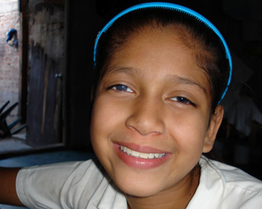

Fui el segundo de los 3 hijos varones, nací en Los Mochis, Sinaloa, el 8 de junio del 2001. Mis padres son el Ing. Luis Eduardo Alverde Montemayor y Adriana Castro Careaga. Mi vida fue muy corta, solamente 3 años 3 meses, pero aún en mi inocencia, admiro la nobleza de mis padres y me llena de felicidad saber que decidieron donar mi corazón, mi hígado, mis 2 córneas y mis 2 riñones para que niños de Mérida, Celaya y México, tuvieran vida y calidad de vida a través de mis órganos.

De mirada triste y amplia sonrisa, Kimberly de 9 años se sobrepone al trasplante de córnea que se le practicó y con el que ahora puede hacer una vida más normal como andar en bicicleta, ir sola a la escuela y ver la televisión. Desde el nacimiento la pequeña originaria del Estado de Chihuahua, tiene catarata congénita la cual la mantuvo por varios años casi en la oscuridad.